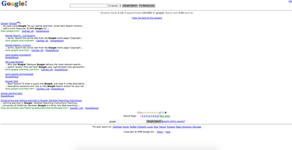

Hi, I'm Lyn.
Hi, I'm Lyn.
Google!
I've dreamed of working for Google since the start of my career. I've been a user since close to it's beginning, believe in the efforts put forth by different initiatives such as Women Techmakers and Google CS First, and it's mission to make the world's information accessible to all. To show how I'd bring value to the company, I've compiled a fact sheet about me and what I'd bring to the table for the positions I'm interested in. I look forward to meeting you and finding my place as a Googler!
History
I have been connected to the interwebs since AOL 3.0 and using those free CDs for 1 month of service. I stumbled upon Google for the first time when it looked like this:

My favorite searches, 1998-2002:
- video game cheat codes
- celebrity bios
- gifs for myBlackplanetpage
I started my career as a stay-at-home-mom. On mom-focused message boards, I noticed that a lot of mom entrepreneurs needed logo design, websites, a social media presence, and more. After teaching myself HTML/CSS/PHP, I started my own business making websites using CMS platforms like Wordpress and offering small businesses a one-stop marketing team. I routinely managed social media content and interaction, built online communities, designed logos, designed and maintained websites, provided UX/UI consultations, and more.
After about 5 years, providing a wide range of entrepreneurs and businesses with marketing and design services, I started to teach myself to code more extensively. Because of my situation, I wasn't able to go back to school full time but I knew that bootcamps were another viable option to accelerate my learning and offer more to my clients. I went to General Assembly to learn Full Stack Development, and have been coding nightly ever since.
After about 5 years, providing a wide range of entrepreneurs and businesses with marketing and design services, I started to teach myself to code more extensively. Because of my situation, I wasn't able to go back to school full time but I knew that bootcamps were another viable option to accelerate my learning and offer more to my clients. I went to General Assembly to learn Full Stack Development, and have been coding nightly ever since.
Value
How do you quantify personal and company value? I'm confident that I can learn quickly, think on my feet, come up with viable solutions, and responsibly report in on time. I'm a natural leader, able to command audiences young and old with engaging content. I'm a writer, able to manipulate words to my bidding. I'm a new developer, but it hasn't stopped me yet- I've learned Foundation in a few hours, wireframed and produced complex SPAs in a day, wrote curriculum in less than 2 hours to teach a class, and more. I do what I need to do to get the job done, and will spend long hours studying something new, to not only do good, but great work. I have built a vast network of fellow brown changemakers in tech to gain support, mentorship, and more, and access said network via Slack when I'm stuck on problems or need advice. I love asking and answering questions, being a mentor to others, and learning more about my career field.
Goals
As I learn and grow in the field, I'd like to use my experience as a front-end developer and share it with others. I'm happy to teach, motivate, share, and improve the lives of others through education, empathy, and action. Given my varied background, I could see myself as a kick-ass project manager, a dope dev advocate, a game-changing diversity specialist, or a cool software developer. In whatever path is right for me, I see myself inspiring the next generation of diverse tech workers to create the thing that will change or improve the world.
I'd also eventually like to create a project of my own that makes its way into the world, and am currently reviewing my ideas to pick one to build to MVP.
I'd also eventually like to create a project of my own that makes its way into the world, and am currently reviewing my ideas to pick one to build to MVP.
That's It!
Yes, that's it. I'm so excited to be considered. Like, really excited. I can't wait to speak to your team! Feel free to contact me via email, hi@lynmuldrow.com.